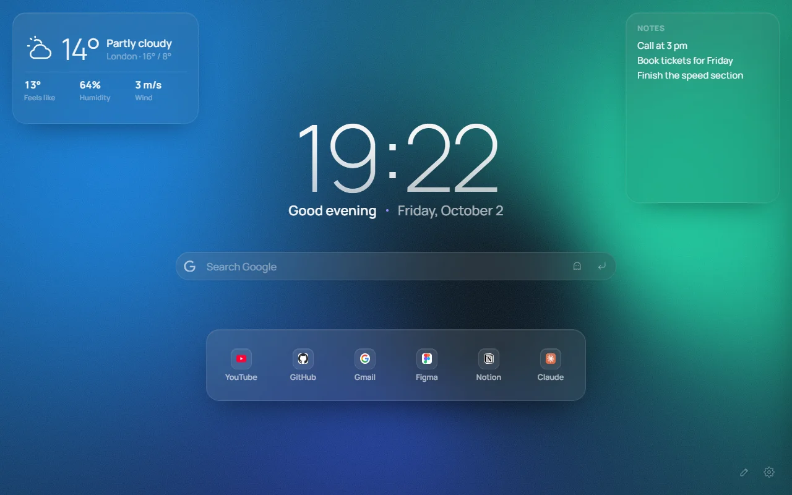
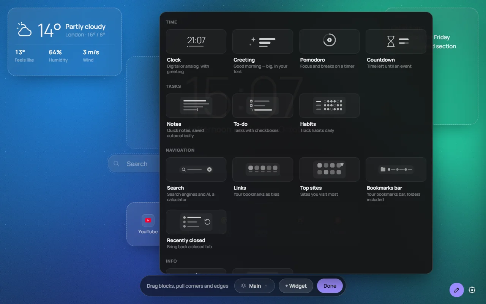
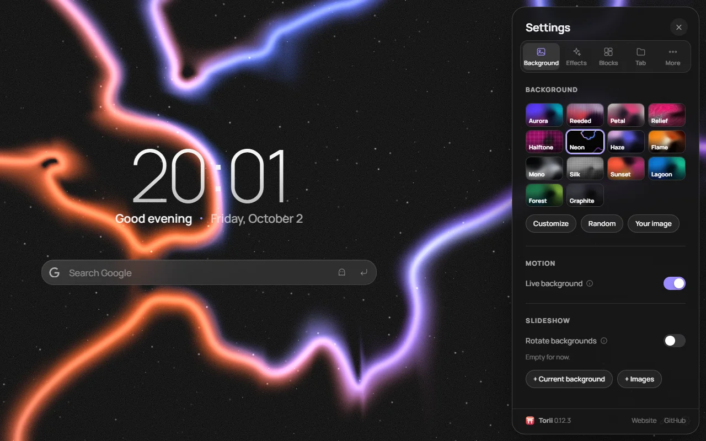
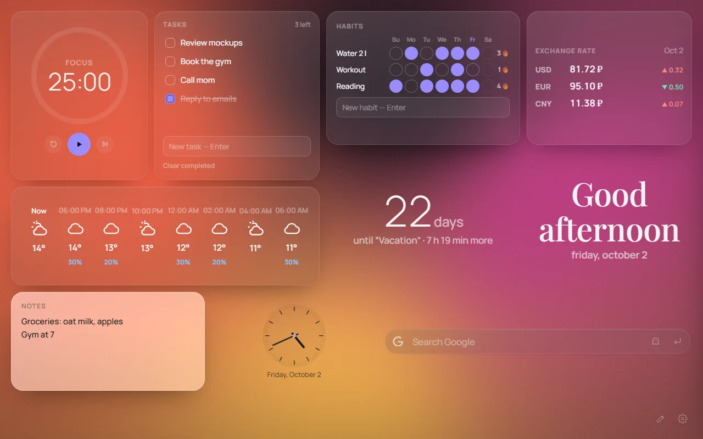
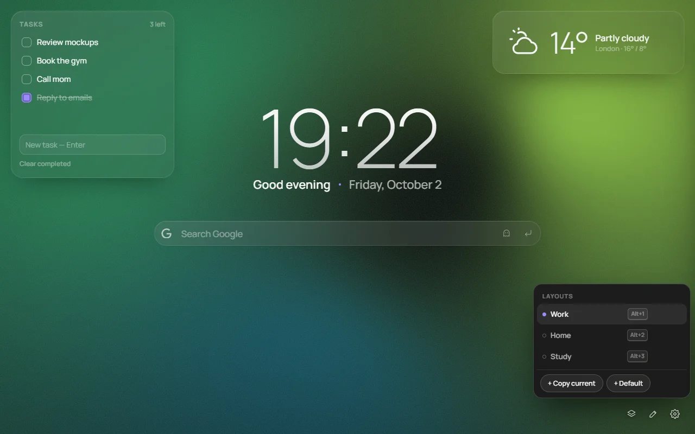

A new tab that you lay out
Drag and resize widgets anywhere — not a single centered column, but wherever you like. Live backgrounds, glass, saved layouts.
Edge, Opera, Brave and Yandex Browser — also from the Chrome Web Store


What it does
Everything you want on a new tab and nothing you don't. Every detail is customizable, and it looks good out of the box.
Free-form layout
Drag blocks anywhere and resize them from any corner — not one centered column, but your own tab. Layouts for a monitor and a laptop are remembered separately.
Live backgrounds
Smooth gradients, 14 presets and a color editor. Or your own image — as is or with frosted glass, halftone or duotone.
Glass
Frosted blocks adapt to the background so text stays readable. In Chrome there's also "liquid glass".
Saved layouts
Each has its own widgets, background and style. Switch with a single key.
How it looks
Click a picture to open it full size.








Install
Free in every browser.
Opera, Brave, Vivaldi and Yandex Browser install extensions from the Chrome Web Store — use the Chrome version.
Torii is free and ad-free
If you like it, you can support the project via Telegram (Tribute). It helps ship new widgets and backgrounds.